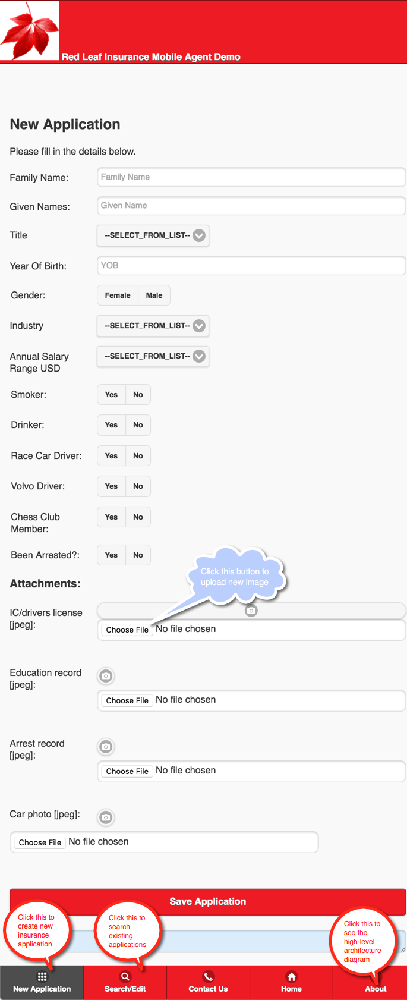

Insurance Agent Mobile App Demo
Walkthrough
The default username is “sumeet” and password is “sumeet”. Clicking on “Log Me In To My Account” will take you to “New Applications” page. In the background when you click on Login button, it send a message to Solace appliance which is processed and authenticated by the LoginHandler service.
New application
The below screen takes you to the default landing page that you see after you are successfully authenticated by LoginService handler.

After you fill in the necessary details and choose required images to upload, click on the “Save Application” button. In the background this action will send several messages such as Application Data and Images data. These messages are received the application running within Fuse. The application validates, process and saves Application Data in the DB and images data on the disk (image files names are saved in the DB). It then sends the response back to the UI.
Search existing applications
The below screen shows the search applications page.

You have an option to search applications based on the first name of the applicants. You can leave this space blank and hit the search button to search all existing applications.
The search response is listed below. You may click the individual record in the list to view/update.
Update application
The below screen shows the edit/update application page.

You may change any details as needed (including images) and hit “Update Application button”. The backend application validates, process and saves the updated Application Data in the DB and images data on the disk (image files names are saved in the DB). It then sends the response back to the UI.